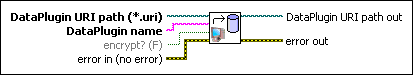

Export DataPlugin VI
Owning Palette: Manage DataPlugins VIs
Requires: Base Development System (Windows)
Exports a DataPlugin that exists on the local computer to a .uri file.
 | Note You can export only DataPlugins with a type of VBS or VBCrypt. Use the List DataPlugins VI to view the type of a DataPlugin. |

 Add to the block diagram Add to the block diagram |
 Find on the palette Find on the palette |